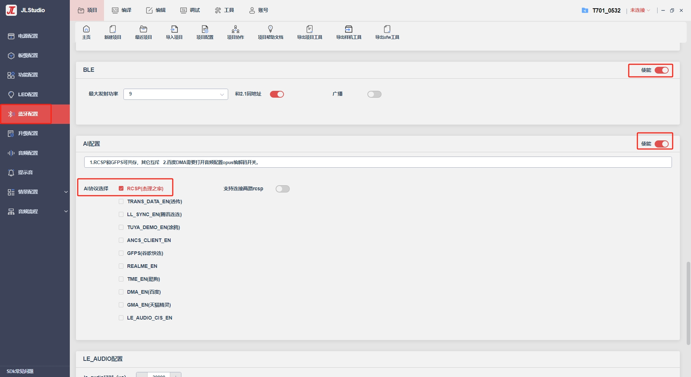
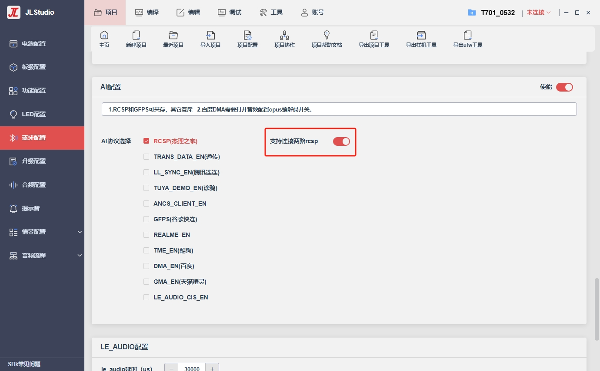

2.3. rcsp开发说明
通过打开可视化配置工具的ble+rcsp开关即可开启设备的rcsp功能，设备开机后默认会开启ble广播等待手机APP进行连接。
杰理提供官方APP如：杰理之家（耳机、音箱功能）、宜动健康（手表功能）、杰理OTA（专做升级开发使用）。iPhone的App Store，Android手机的应用商店中搜索即可下载。

2.3.1. rcsp profile自定义说明
在apps/common/third_party_profile/multi_protocol_main.c文件中更改rcsp ble profile内容。ble profile创建教程详见杰理make_gatt_services工具。
// rcsp ble profile，用户可以此为基础添加需要ble服务和特征
const uint8_t rcsp_profile_data[] = {
//////////////////////////////////////////////////////
//
// 0x0001 PRIMARY_SERVICE 1800
//
//////////////////////////////////////////////////////
0x0a, 0x00, 0x02, 0x00, 0x01, 0x00, 0x00, 0x28, 0x00, 0x18,
/* CHARACTERISTIC, 2a00, READ | WRITE | DYNAMIC, */
// 0x0002 CHARACTERISTIC 2a00 READ | WRITE | DYNAMIC
0x0d, 0x00, 0x02, 0x00, 0x02, 0x00, 0x03, 0x28, 0x0a, 0x03, 0x00, 0x00, 0x2a,
// 0x0003 VALUE 2a00 READ | WRITE | DYNAMIC
0x08, 0x00, 0x0a, 0x01, 0x03, 0x00, 0x00, 0x2a,
//////////////////////////////////////////////////////
//
// 0x0004 PRIMARY_SERVICE ae00
//
//////////////////////////////////////////////////////
0x0a, 0x00, 0x02, 0x00, 0x04, 0x00, 0x00, 0x28, 0x00, 0xae,
/* CHARACTERISTIC, ae01, WRITE_WITHOUT_RESPONSE | DYNAMIC, */
// 0x0005 CHARACTERISTIC ae01 WRITE_WITHOUT_RESPONSE | DYNAMIC
0x0d, 0x00, 0x02, 0x00, 0x05, 0x00, 0x03, 0x28, 0x04, 0x06, 0x00, 0x01, 0xae,
// 0x0006 VALUE ae01 WRITE_WITHOUT_RESPONSE | DYNAMIC
0x08, 0x00, 0x04, 0x01, 0x06, 0x00, 0x01, 0xae,
/* CHARACTERISTIC, ae02, NOTIFY, */
// 0x0007 CHARACTERISTIC ae02 NOTIFY
0x0d, 0x00, 0x02, 0x00, 0x07, 0x00, 0x03, 0x28, 0x10, 0x08, 0x00, 0x02, 0xae,
// 0x0008 VALUE ae02 NOTIFY
0x08, 0x00, 0x10, 0x00, 0x08, 0x00, 0x02, 0xae,
// 0x0009 CLIENT_CHARACTERISTIC_CONFIGURATION
0x0a, 0x00, 0x0a, 0x01, 0x09, 0x00, 0x02, 0x29, 0x00, 0x00,
// END
0x00, 0x00,
};
2.3.2. rcsp自定义ble设备名字
用户外部实现这个函数，用来定义自己的ble设备名，不实现则默认使用经典蓝牙名。
/**
* @brief rcsp用户自定义ble设备名字
*/
// 需要外部实现以下函数返回自定义ble设备名
const char *rcsp_ble_name()
{
return "ble_name";
}
2.3.3. rcsp自定义ble广播内容
apps/common/third_party_profile/jieli/rcsp/adv/ble_rcsp_adv.c
/**
* @brief rcsp的adv广播包，具体内容见代码
*/
int rcsp_make_set_adv_data(void)
/**
* @brief rcsp的response广播包，具体内容见代码
* 常用该函数来设置广播包中的ble设备名
*/
int rcsp_make_set_rsp_data(void)
2.3.4. rcsp自定义数据的发送与接收
用户通过rcsp的profile自定义自己ble的服务与特征来发送接收自定义数据，或者需要经过rcsp ble特征来发送接收自定义数据，或者需要使用spp进行自定义数据的发送与接收，需要外部文件通过以下两个函数，来做到自定义数据的发送与接收。
/**
* @brief 用于外部接收ble/spp自定义数据使用
*
* @param ble_con_hdl ble发送句柄
* @param remote_addr spp发送地址
* @param buf 接收数据
* @param len 接收数据的长度
* @param att_handle ble_con_hdl有值时，ble的特征值，一般是用户自定义的特征
*/
// 需要外部实现以下函数来处理自定义数据
void bt_rcsp_custom_recieve_callback(u16 ble_con_hdl, void *remote_addr, u8 *buf, u16 len, uint16_t att_handle)
{
// custom data handle
}
/**
* @brief 用于发送ble/spp自定义数据使用
*
* @param ble_con_hdl ble发送句柄
* @param remote_addr spp发送地址 注：当ble_con_hdl与remote_addr都不填时，给所有的设备都发数据
* @param buf 发送的数据
* @param len 发送的数据长度
* @param att_handle ble_con_hdl有值时，可填用户自定义的特征, 为0是rcsp的特征值
* @param att_op_type 参考att_op_type_e枚举的排序
*/
// 需要外部直接调用这个函数来发送自定义数据
void bt_rcsp_custom_data_send(u16 ble_con_hdl, u8 *remote_addr, u8 *buf, u16 len, uint16_t att_handle, att_op_type_e att_op_type);
2.3.5. rcsp截取att_read/write_callback的实现
/**
* @brief 用于外部自定义att_read_callback的使用
*
* @param hdl ble的结构体句柄
* @param connection_handle ble的连接句柄
* @param att_handle ble特征值
* @param offset
* @param buffer 读特征的数据
* @param buffer_size 读特征的数据长度
*/
uint16_t bt_rcsp_custom_att_read_callback(void *hdl, hci_con_handle_t connection_handle, uint16_t att_handle, uint16_t offset, uint8_t *buffer, uint16_t buffer_size)
/**
* @brief 用于外部自定义att_write_callback的使用
*
* @param hdl ble的结构体句柄
* @param connection_handle ble的连接句柄
* @param att_handle ble特征值
* @param transaction_mode
* @param offset
* @param buffer 写特征的数据
* @param buffer_size 写特征的数据长度
*/
void bt_rcsp_custom_att_write_callback(void *hdl, hci_con_handle_t connection_handle, uint16_t att_handle, uint16_t transaction_mode, uint16_t offset, uint8_t *buffer, uint16_t buffer_size)
2.3.6. rcsp ble连接参数设置
当需要设置ble数据的传输速度的时候，apps/common/third_party_profile/jieli/rcsp/ble_rcsp_server.c
// 正常连接时候的连接参数列表，序号越大速度越快
static const struct conn_update_param_t connection_param_table[] = {
{16, 24, 16, 600},
{12, 28, 14, 600},//11
{8, 20, 20, 600},//3.7
/* {12, 28, 4, 600},//3.7 */
/* {12, 24, 30, 600},//3.05 */
};
// 升级时候的连接参数列表，序号越大速度越快
static const struct conn_update_param_t connection_param_table_update[] = {
{96, 120, 0, 600},
{60, 80, 0, 600},
{60, 80, 0, 600},
/* {8, 20, 0, 600}, */
{6, 12, 0, 400},/*ios 提速*/
};
2.3.7. rcsp功能配置
rcsp默认有多种功能，用户可以根据自身需求到apps/common/third_party_profile/jieli/rcsp/rcsp_cfg.h文件中自行配置，包括RCSP_MODE_EARPHONE、RCSP_MODE_SOUNDBOX等，以耳机为例：
// 在文件中找到被宏定义包围的：(RCSP_MODE == RCSP_MODE_EARPHONE)
#define RCSP_MSG_DISTRIBUTION_VER RCSP_MSG_DISTRIBUTION_VER_VISUAL_CFG_TOOL // 可视化配置工具的消息分发管理
#define RCSP_ADV_EN 1
#define RCSP_DEVICE_STATUS_ENABLE 1 // 设备状态信息功能
#define RCSP_BT_CONTROL_ENABLE 0 // bt控制功能
#define RCSP_UPDATE_EN 1 // 是否支持rcsp升级
#if CONFIG_DOUBLE_BANK_ENABLE // 双备份才能打开同步升级流程
#define OTA_TWS_SAME_TIME_ENABLE 1 // 是否支持TWS同步升级
#define OTA_TWS_SAME_TIME_NEW 1 // 使用新的tws ota流程
#define UPDATE_MD5_ENABLE 0 // 升级是否支持MD5校验
#else
#define OTA_TWS_SAME_TIME_ENABLE 0 // 是否支持TWS同步升级
#define OTA_TWS_SAME_TIME_NEW 0 // 使用新的tws ota流程
#define UPDATE_MD5_ENABLE 0 // 升级是否支持MD5校验
#endif //CONFIG_DOUBLE_BANK_ENABLE
// 默认的功能模块使能
#define RCSP_ADV_NAME_SET_ENABLE 1 // 蓝牙名设置
#define RCSP_ADV_KEY_SET_ENABLE 1 // 按键设置
#define RCSP_ADV_LED_SET_ENABLE 0 // 灯光设置
#define RCSP_ADV_MIC_SET_ENABLE 1 // mic设置
#define RCSP_ADV_WORK_SET_ENABLE 1 // 模式设置（游戏模式）
#define RCSP_ADV_HALTER_ENABLE 0 // 挂脖功能
#define RCSP_ADV_EQ_SET_ENABLE 1 // eq设置
#define RCSP_ADV_MUSIC_INFO_ENABLE 1 // 音乐信息设置
#define RCSP_ADV_HIGH_LOW_SET 1 // 高低音设置
#define RCSP_ADV_FIND_DEVICE_ENABLE 1 // 查找设备设置
#define RCSP_ADV_PRODUCT_MSG_ENABLE 1 // 获取产品信息
#define RCSP_ADV_COLOR_LED_SET_ENABLE 0 // 彩灯设置
#define RCSP_ADV_KARAOKE_SET_ENABLE 0 // 卡拉OK设置
#define RCSP_ADV_KARAOKE_EQ_SET_ENABLE 0 // 卡拉OK EQ设置
#define RCSP_ADV_AI_NO_PICK 0 // 智能免摘
#define RCSP_ADV_ASSISTED_HEARING 0 // 辅听，注意开启辅听后，需要关闭ANC相关功能
#if !RCSP_ADV_ASSISTED_HEARING
#define RCSP_ADV_ANC_VOICE 1 // 主动降噪
#if RCSP_ADV_ANC_VOICE
#define RCSP_ADV_ADAPTIVE_NOISE_REDUCTION 0 // 自适应降噪
#define RCSP_ADV_SCENE_NOISE_REDUCTION 0 // 场景降噪
#define RCSP_ADV_WIND_NOISE_DETECTION 0 // 风噪检测
#define RCSP_ADV_VOICE_ENHANCEMENT_MODE 0 // 人声增强模式
#endif
#endif
特别的，如果只需要RCSP的升级功能，则只需要设置RCSP_UPDATE_EN为1即可，其他设置为0：
#define RCSP_UPDATE_EN 1 //是否支持rcsp升级
2.3.8. 两路rcsp配置
rcsp支持一拖二功能（即同时被两个手机的手机APP连接）：但是功能有限，配置两路rcsp后，仅支持开启EQ、ANC、更改设备名、按键配置、游戏模式、升级、一拖二管理、mic管理等。

2.3.9. rcsp的debug开关
int app_info_debug_enable = 0; // | BIT(4); // rcsp库内部打印
/* #define RCSP_API_LOG 0 */ // rcsp认证相关
/* #define RCSP_PACKET_LOG 1 */
/* #define RCSP_PROTOCOL_LOG 2 */ // rcsp发送接收数据相关
/* #define SPP_USER_LOG 3 */
/* #define RCSP_INTERFACE_LOG 4 */ // rcsp连接相关
2.3.10. rcsp支持ble+spp连接共存
适用于某些需要Android手机APP先连接ble然后连接spp后，再断开ble的需求。
u8 rcsp_allow_ble_spp_connect_simultaneously = 0; // 1t1时，是否允许ble连接的同时连接spp
2.3.11. rcsp连接信息的tws主从切换问题跟进
有时候开发会遇到主从切换之后，新的主机虽然连着手机APP，但是手机APP却无法和新主机通讯的问题：
1.在手机APP与设备连接的时候会调用void bt_rcsp_set_conn_info(u16 con_handle, void *remote_addr, bool isconn);函数，底层会调用void rcsp_interface_bt_handle_tws_sync(void)将连接信息tws同步到从机；
2.双耳tws配对连接之后，会调用void rcsp_interface_bt_handle_tws_sync(void)将连接信息tws同步到从机；
3.在上述1-2步骤后，apps/common/third_party_profile/jieli/rcsp/rcsp_functions/rcsp_bt_manage.c的文件中，包含void rcsp_interface_bt_handle_tws_sync(void)的实现，就是把主机的连接信息通过tws命令传给从机，这里留下了屏蔽的打印用于追踪主从切换导致的通讯问题。
2.3.12. rcsp spp通道与在线调音的spp通道互斥问题
由于rcsp spp通道使用的是公共id，当开启rcsp功能后会导致在线调音的spp通道无效，底层默认设置了弱函数，用户可在apps/common/third_party_profile/jieli/online_db/spp_online_db.c中添加该弱函数的实现即可恢复在线调音功能。具体弱函数实现代码如下：
int user_spp_handler_for_multi_dev_callback(u8 *addr, u8 local_id, u8 packet_type, u16 ch, u8 *packet, u16 len)
{
switch (packet_type)
{
case 1:
printf("debug online spp connect ------- \n");
online_spp_state_cbk(packet_type);
break;
case 2:
printf("debug online spp disconnect ------- \n");
online_spp_state_cbk(packet_type);
break;
case 7:
log_info("spp_api_rx(%d) \n", len);
log_info_hexdump(packet, len);
online_spp_recieve_cbk(NULL, packet, len);
break;
default:
break;
}
return 0;
}
2.3.13. 客户想要通过自己ble服务的读写特征走rcsp命令
/**
* @brief 用于外部自定义att_write_callback的使用
* 外部实现这个函数，收到对应的写特征数据传到rcsp底层
*
* @param hdl ble的结构体句柄
* @param connection_handle ble的连接句柄
* @param att_handle ble特征值
* @param transaction_mode
* @param offset
* @param buffer 写特征的数据
* @param buffer_size 写特征的数据长度
*/
void bt_rcsp_custom_att_write_callback(void *hdl, hci_con_handle_t connection_handle, uint16_t att_handle, uint16_t transaction_mode, uint16_t offset, uint8_t *buffer, uint16_t buffer_size)
{
switch(att_handle) {
case xxx用户自定义的写特征：
bt_rcsp_recieve_callback(hdl, NULL, buffer, buffer_size);
}
}
/**
* @brief 设置rcsp的ble的默认发送特征
* 外部调用这个函数，就可以改成用户自定义的服务读特征来发送rcsp数据
* 一般在multi_protocol_main.c文件里面的bt_rcsp_interface_init函数前面调用即可
*
* @param att_handle ble_con_hdl有值时，可填用户自定义的特征, 为0是rcsp的特征值
* @param att_op_type 参考att_op_type_e枚举的排序，为0是rcsp的特征值
*/
void bt_rcsp_set_default_send_att_msg(uint16_t att_handle, att_op_type_e att_op_type);